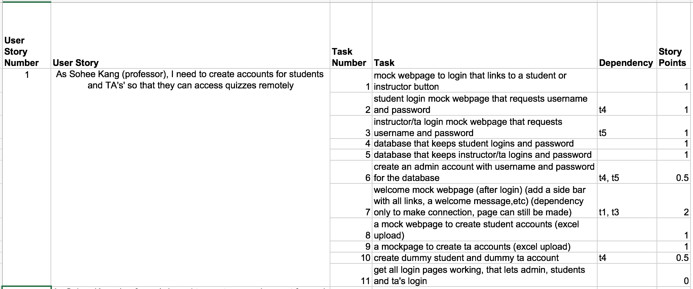
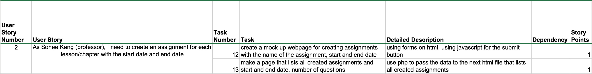

- As Sohee Kang (professor), I need to create accounts for students and TA's' so that they can access quizzes remotely

- As Sohee Kang (professor), I need to create an assignment for each lesson/chapter with the start date and end date

- As Sohee Kang (professor) or Adrian Lal (TA), I need to be able to create questions such as multiple choice, text input with the correct solution and the grade weight to each assignment
- As Sohee Kang (professor), I need to be able to edit questions and answers after creation
- As Bob Sponge (student), I need to be able to take a quiz for each lesson
- As Sohee Kang (professor), I want each assignment/quiz to have randomized questions so that students don't have the same quiz
- As Sohee Kang (professor), I need students to be able to retake a quiz as many times as they want
- As Bob Sponge (student), I want to be able to see my grades for each quiz
- As Dr. Aus (professor), I need to be able to see the students' grade for each quiz
- As Dr. Aus (professor), I want to be able to give feedback for each incorrectly answered questions
- As Bob Sponge (student), I want to see the feedback/ correct solution for each incorrectly answered answer(after the deadline)
- As Dr.Aus (professor), I would like to set a difficulty level for each question
- As Bob Sponge (student), I would like to be able to try harder quizes
- As Edward Squid (student), I would like be able to see a leaderboard with a list of top students with the highest scores